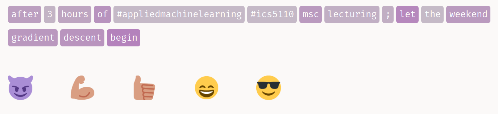
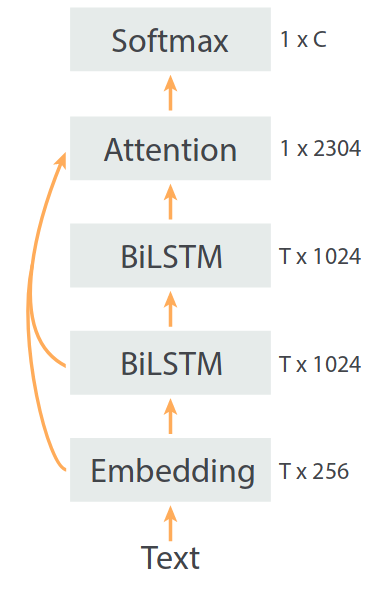
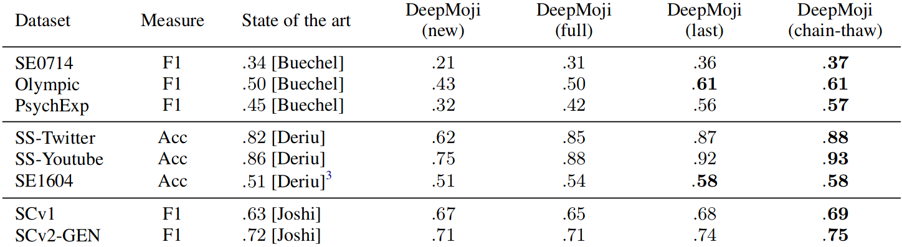

Angelo Basile & Kenny Lino
January 12, 2018

Using millions of emoji occurrences to learn any-domain representations for detecting sentiment, emotion and sarcasm (Felbo et al.)
broad usage of emojis
opinion mining
necessity?
interlingua?
1.2 billion tweets and 64 commonly used emojis

Use the pre-trained network on various tasks
Previous models limited by binary classification and/or manual categorization
detection of…
sentiment
emotion
sarcasm

no conclusions